방송통신산업기사 (2011-10-09 기출문제)
1과목: 디지털 전자회로
1. 2단 이상의 증폭기에서 잡음을 줄일 수 있는 가장 효과적인 방법은?
- 종단 증폭기의 이득은 첫단 증폭기에 비해 가능한 낮게 설계한다.
- 첫단 증폭기는 가능한 이득이 큰 증폭기로 구성한다.
- 첫단 증폭기를 트랜지스터(쌍극성 트랜지스터) 증폭기로 구성한다.
- 첫단 증폭기를 저잡음을 발생하는 FET 증폭기로 구성한다.
(정답률: 71%)

2. 아날로그 TV의 영상신호 전송에 사용되는 방식으로 한 쪽 측파대의 일부를 남겨 통신하는 방식은?
- VSB
- DSB
- SSB
- FSK
(정답률: 85%)
3. 펄스의 주기와 진폭은 일정하고, 펄스의 폭을 입력신호에 따라 변화시키는 변조 방식은?
- PAM(Pulse Amplitude Modulation)
- PWM(Pulse Width Modulation)
- PPM(Pulse Position Modulation)
- PCM(Pulse Code Modulation)
(정답률: 75%)
4. 전원 정류회로의 리플 함유율을 적게하는 방법으로 적당하지 않은 것은?
- 출력측 평활형 콘덴서의 정전용량을 작게 한다.
- 평활형 초크 코일의 인덕턴스를 크게 한다.
- 입력측 평활용 콘덴서의 정전용량을 크게 한다.
- 교류입력전원의 주파수를 높게 한다.
(정답률: 85%)
5. 다음 중 멀티플렉서의 실현에 대한 내용으로 틀린것은?
- 여러 개의 데이터 입력을 적은 수의 채널로 전송한다.
- n개의 입력선과 2n개의 선택선으로 구성한다.
- 선택선은 비트조합에 의해 입력중 하나가 선택된다.
- Data Selector라고도 할 수 있다.
(정답률: 74%)
6. 이상적인 연산증폭회로의 조건으로 틀린 것은?
- 개방상태에서 입력 임피던스는 무한대이다.
- 개방 루프(Open Loop) 이득이 무한대이다.
- CMRR 값이 1이다.
- 입력옵셋 전압이 0이다.
(정답률: 69%)
7. 수정 발진회로에서 수정 진동자의 전기적 직렬 공진 주파수를 fs, 병렬 공진 주파수를 fp라 할 때, 가장 안정된 발진을 하기 위한 조건은? (단, fa는 발진 주파수이다.)
- fp＜fa＜fs
- fa＞fs
- fs＜fa＜fp
- fa＞fp
(정답률: 93%)
8. 이미터접지 트랜지스터 증폭기회로에서 입력신호와 출력신호의 전압 위상차는 얼마인가?
- 0°의 위상차가 있다.
- 180°의 위상차가 있다.
- 90°의 위상차가 있다.
- 270°의 위상차가 있다.
(정답률: 93%)
9. FET 증폭기에 있어서 |AV|=30, Cgd=1[pF], Cgs=10[pF]일 때의, 등가입력용량은 얼마인가?
- 27[pF]
- 41[pF]
- 48[pF]
- 84[pF]
(정답률: 알수없음)
10. 비동기식 카운터의 플립플롭 구성에 대한 설명으로 틀린 것은?
- 플립플롭 2개를 사용하여 16진 카운터 계수를 나타낸다.
- T 플립플롭으로 구성된다.
- J-K 플립플롭으로 구성할 때 입력 J=K=1로 한다.
- T 플립플롭으로 구성할 때 입력 T=1로 하여 Toggle 상태로 한다.
(정답률: 90%)
11. 반가산기(Half adder)에 대한 논리회로도로 옳은 것은? (X, Y: 입력, C: Carry, S: 합)
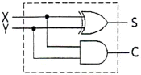
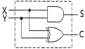
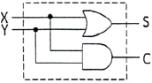
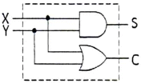
(정답률: 77%)
12. 다음 중 비동기식 카운터에 대한 설명으로 틀린것은?
- 동기식 카운터에 비해 입력신호의 전달지연시간이 길다.
- 동기식에 비해 논리상의 오차 발생비율이 많다.
- 구조상으로 동기식에 비해 회로가 간단하다.
- 같은 클럭펄스에 의해 트리거 된다.
(정답률: 62%)
13. 다음 중 발진 조건에 대한 설명으로 가장 맞는 것은?
- 정궤환을 해야 한다.
- 부궤환을 해야 한다.
- 이미터 안정저항을 설치하여야 한다.
- 바이패스 콘덴서를 설치하여야 한다.
(정답률: 알수없음)
14. 디지털 IC 계열에 대한 특성이 다음 표와 같다면, 논리장치인 CHIP의 전력소모를 줄이기 위하여 가장 낮은 전력을 소모하는 것은 어느 것인가?
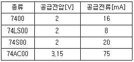
- 7400
- 74LS00
- 74S00
- 74AC00
(정답률: 100%)
15. 평활회로를 통과한 출력전압이
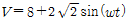
[V]일 때, 맥동률은 얼마인가?- 15[%]
- 25[%]
- 40[%]
- 50[%]
(정답률: 알수없음)
16. 최대 표현 숫자가 256 종류인 경우 이를 표현하기 위하여 몇 비트의 디지트가 필요하게 되는가?
- 5비트
- 6비트
- 7비트
- 8비트
(정답률: 79%)
17. 하강시간(Fall Time)은 펄스 진폭의 몇 [%]부터 몇 [%]까지 떨어지는데 걸리는 시간인가?
- 90~0[%]
- 90~10[%]
- 100~10[%]
- 100~0[%]
(정답률: 90%)
18. RC 직렬회로에서 R=500[kΩ], C=2[μF]이다 C의 양단이 출력이고 입력단에 20[V]를 인가하였다. 입력을 인가한 시점부터 출력이 12.64[V]가 되는 시간은?
- 10[msec]
- 20[msec]
- 1[sec]
- 2[sec]
(정답률: 73%)
19. 전원공급기 필터로서 정류기의 출력저항과 병렬로 연결하여 구성하는데 가장 적합한 소자는?
- 초크 코일
- 마일러 콘덴서
- 전해 콘덴서
- 동조용 코일
(정답률: 65%)
20. 다음의 진리표에 대한 논리회로 기호로 올바른 것은?
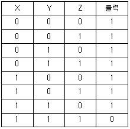
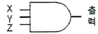
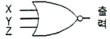
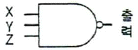
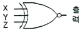
(정답률: 64%)
2과목: 방송통신 기기
21. 다음은 국내 초단파(VHF) 대역의 주파수 분배 내역이다. 옳지 않은 것은?
- FM 라디오 방송 : 88[MHz]~108[MHz]
- TV 방송 ch2~4 : 54[MHz]~72[MHz]
- TV 방송 ch5~6 : 72[MHz]~84[MHz]
- TV 방송 ch7~13 : 174[MHz]~216[MHz]
(정답률: 42%)
22. 벡터스코프(Vectorscope) 모니터의 burst 신호(0°)를 기준시 시계방향으로 90도에서 180도 사이에 나타나는 색상은?
- Yellow
- Green
- Cyan
- Magenta
(정답률: 95%)
23. 다음 중에서 컬러 TV 방송의 색전송 방식이 아닌 것은?
- NTSC 방식
- SECAM 방식
- PAL 방식
- VSB 방식
(정답률: 알수없음)
24. 주로 100[kHz] 미만의 영상 중간 주파수나 저주파 대에서 위상왜곡에 의해 발생되는 현상으로 화면에 원하지 않는 줄무늬 형태로 나타나는 현상은?
- 웨이브 트랩(wave trap) 현상
- 링깅(ringing) 현상
- 스트리킹(streaking) 현상
- 웨지(wedge) 현상
(정답률: 62%)
25. 위성방송 수신안테나의 앙각에 대한 설명으로 맞는 것은?
- 위성안테나의 방향을 정하기 위하여 정북 방향에서 시계방향으로 계산한 각도이다.
- 위성 수신신호의 편파면에 맞도록 정한 안테나의 방향이다.
- 위성을 봤을 때 수평선과의 각도이다.
- 위성신호를 정확하게 수신하기 위한 원주각이다.
(정답률: 57%)
26. 다음 중 영상신호의 미분이득 특성에 대하여 측정이 가능한 계측기는?
- 웨이브폼 모니터
- 주파수 카운터
- 오실로스코프
- 스펙트럼 아날라이져
(정답률: 50%)
27. AM 송신기의 구성요소와 관계없는 것은?
- 발진부
- 매트릭스 회로부
- 변조부
- 안테나 결합부
(정답률: 67%)
28. 아날로그 위성 방송의 송신기에서 FM 변조하기 전에 음성의 고주파 부분을 강조하는 것을 무엇이라 하는가?
- 대역변조
- 프리엠퍼시스
- 스켈치
- 저잡음 변환
(정답률: 75%)
29. ENG 카메라와 조합으로 300[m] 이내의 카메라 케이블 없이 중계차와 링크를 자유롭게 중계방송이 가능한 소형 마이크로웨이브 설비는?
- VSAT
- FPU
- EEP
- SNG
(정답률: 62%)
30. 방송용 카메라에 많이 사용되는 CCD에 대한 설명으로 틀린 것은?
- 촬상관에 비해 S/N비가 높다.
- 강한 광선에 의해 소자가 손상되는 burn-in 현상이 없다.
- 물결무늬 현상이 잘 생기지 않는다.
- 소형, 경량 및 저소비 전력화가 용이하다.
(정답률: 알수없음)
31. 스펙트럼 아날라이져의 다이나믹 레인지란?
- 동시에 측정할 수 있는 최대 레벨의 신호와 최소 레벨 신호 사이의 범위
- 저역에서 고역까지 일정하게 재생할 수 있는 주파수 범의
- 신호의 일그러짐을 퍼센트[%]로 표시하는 범위
- 규정된 임피던스의 부하를 연속적으로 출력할 수 있는 파워의 최소 범위
(정답률: 58%)
32. 위성방송에서 Ku-Band에서의 주파수가 맞는 것은?
- Up-Link : 12[GHz], Down-Link : 14[GHz]
- Up-Link : 15[GHz], Down-Link : 12[GHz]
- Up-Link : 14[GHz], Down-Link : 12[GHz]
- Up-Link : 12[GHz], Down-Link : 15[GHz]
(정답률: 알수없음)
33. 다음 중 FM 신호의 검파(복조) 방식이 아닌것은?
- 경사형 검파기(Slope detector)
- PLL(Phase-Locked Loop) 검파기
- 비 검파기(Ratio detector)
- 포락선 검파기(Envelope detector)
(정답률: 82%)
34. 리얼리즘 매체로 불리며 육안으로 볼 수 없는 것까지 보여주며, 주사선수가 1,125개로 기존 텔레비전보다 6배정도 선명한 화면을 얻을 수 있는 매체는?
- EDTV
- IDTV
- HDTV
- VOD
(정답률: 100%)
35. 다음 중 dB에 대한 설명 중 틀린 것은?
- dB는 상용대수를 사용화여 두 신호의 전력이나 세기의 비율을 나타내기 위한 표현법이다.
- dBm은 1[mv]의 전력신호를 기준으로 P2/P1의 전력을 비교 설명할 때 쓰인다.
- 0dBm은 유선통신에서는 특성 임피던스 600[Ω] 회로에 1[mW]의 전력을 공급했을 경우의 값을 나타낸다.
- 무선이나 동축케이블의 경우 특성임피던스 75[Ω]인 회로에 1[mW]의 전력을 공급했을 경우 0[dBm]이라고 정의한다.
(정답률: 67%)
36. 위성 DMB 방송센터에서 압축다중화 시스템으로부터 전송된 신호를 Ku 밴드 주파수로 변환하고, 이를 위성까지 송출하는 부분은?
- 베이스밴드 시스템
- 업링크 시스템
- CAS
- BIS
(정답률: 73%)
37. 다음 그림은 고출력 디지털 TV 중계기의 블록도이다. ( )에 들어갈 기능 블록으로 알맞게 짝지어진 것은?
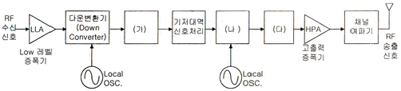
- (가) : 익사이터(Exciter), (나) : 복조기, (다) : 업 변환기(Up Converter)
- (가) : 복조기, (나) : 변조기, (다) : 업 변환기(Up Converter)
- (가) : 복조기, (나) : 변조기, (다) : IF 여파기 및 증폭기
- (가) : IF 여파기 및 증폭기, (나) : 변조기, (다) : 업 변환기(Up Converter)
(정답률: 75%)
38. RF 증폭기의 입력신호전력이 60[μW]이고, 잡음전력이 2[μW]이다. 이때 출력에서 측정된 SNR이 17이다. 여기서 T=290[K]라고 가정할 때 증폭기의 잡음계수는 약 얼마인가?
- 1.764
- 2.764
- 3.764
- 4.764
(정답률: 알수없음)
39. TV 송신기에서 영상과 음성의 전력을 합성하여 1개의 안테나로 송신할 수 있게 하는 장치는 무엇인가?
- 변조장치
- 잔류측파대 필터
- CIN 다이플렉서
- 안테나 급전장치
(정답률: 58%)
40. 라디오에서 주파수변조방식(FM)의 특징이 아닌것은?
- 레벨 변동의 영향을 받는다.
- S/N 비가 개선된다.
- 넓은 주파수 대역이 필요하다.
- AM 방식에 비해서 잡음이나 혼신에 강하다.
(정답률: 94%)
3과목: 방송미디어 개론
41. 영상신호 압축규격이 MPEG-2의 기본적인 특징이라고 말할 수 없는 것은?
- 고화질 제공
- 다양한 영상 포맷에 대응 가능
- MPEG-1과의 완벽한 호환성
- 부호기와 복호기 선택의 복잡성
(정답률: 72%)
42. 일방적으로 TV 프로그램을 수신하는 수신방식에서 비디오 서버에저장된 프로그램을 사용자들이 직접 선택하여 언제 어디서나 프로그램을 시청할 수 있는 서비스는?
- DBS(Direct Broadcast System Committee)
- VTSC(National Television System Committee)
- VOD(Video On Demand)
- ATSC(Advanced Television system Committee)
(정답률: 90%)
43. 내용의 해설 및 다큐멘터리 형식의 프로그램이나 드라마 줄거리 내용을 말로 설명하는 해설은?
- 더빙
- 이벤트
- 리허설
- 나레이션
(정답률: 87%)
44. 문서를 서로 관련지어 찾아볼 수 있도록 만들어진 문서형식을 뜻하는 것은?
- 하이퍼미디어(Hypermedia)
- 하이퍼텍스트(Hypertext)
- 텔레텍스(Teletex)
- 텔레텍스트(Teletext)
(정답률: 73%)
45. NTSC 방식 TV의 초당 적당한 프레임 수는?
- 15
- 30
- 60
- 25
(정답률: 69%)
46. 절대레벨을 부호화하지 않고 바로 전의 샘플치와 현재의 샘플치 사이의 차를 멀티비트 부호로 양자화하는 기술을 무엇이라고 하는가?
- LPC(Linear Predictive Coding)
- PCM(Pulse Code Modulation)
- QAM(Quadrature Amplitude Modulation)
- DPCM(Differential PCM)
(정답률: 60%)
47. 사용자 측면에서 보았을 때 여러 가지 형태와 의미로 컴퓨터와 대화할 수 있는 상황을 뜻하는 멀티미디어 관련 용어는?
- multi-modality
- multi-channel
- multi-path
- multi-touch
(정답률: 64%)
48. TV 방송 전파에 중첩하여 음성 및 기타 음향을 같이 보내는 방송은?
- TV 음성다중 방송
- TV 음악 방송
- 긴급경보 방송
- TV 인터넷 방송
(정답률: 91%)
49. 다음 중 멀티미디어의 사운드 파일 형식이 아닌것은?
- MP3
- WAV
- MIDI
- JPG
(정답률: 90%)
50. 다음 중 케이블 TV 방송 네트워크 시스템에서 광케이블과 동축케이블을 인터페이스 하는 것은?
- TBC
- ONU 혹은 OTR
- TBA
- VOD
(정답률: 84%)
51. 가청 주파수 대역에 모든 주파수 성분이 일정한 크기로 분포하는 신호로 음향 측정에 사용되는 것은?
- single tone
- white noise
- harmonic
- consonance
(정답률: 80%)
52. 다음 중 음의 고저(Pitch)란 무엇인가?
- 음 진동의 진폭의 크기이다.
- 음이 갖고 있는 특색이다.
- 음의 진동수이다.
- 음의 방향감과 원근감이다.
(정답률: 67%)
53. 다음 중 디지털 TV 방송의 ATSC에서 채택한 오디오 압축 방식은?
- JPEG
- Dolby AC-3
- MPEG-1
- MPEG-4
(정답률: 80%)
54. 다음 중 하드 키 조명(Hard Key Light)에 대한 설명으로 틀린 것은?
- Flood Light를 많이 사용한다.
- 여름 대낮의 햇빛과 유사하다.
- 밝은 곳은 더 밝게 어두운 곳은 더 어둡게 운용한다.
- 명암의 대비를 확실히 한다.
(정답률: 알수없음)
55. 다음 중 데이터 방송의 프로그램 독립정보 서비스와 관련이 가장 적은 것은?
- 기상정보
- 증권정보
- 교통정보
- 전자상거래
(정답률: 62%)
56. 우리나라에서 사용되는 지상파 DMB 방송의 전송방식은?
- OFDM 전송방식
- FDM 전송방식
- TDM 전송방식
- 8-VSB 전송방식
(정답률: 알수없음)
57. 다음의 방송장비 중 영상신호 하나를 입력받아 왜곡 없이 여러 가지 다른 영상장비들에게 분배해 주는 장비는 무엇인가?
- FS
- VDA
- CG
- DVE
(정답률: 67%)
58. 네트워크 구성요소는 하드웨어와 소프트웨어로 구성된다. 다음 중 하드웨어 구성요소가 아닌것은?
- 접속 집중기
- 접근 디바이스
- 전송매체
- 디바이스 드라이버
(정답률: 70%)
59. 다음 전송매체 중 대역폭이 가장 넓은 것은?
- Cooper wire cable
- Baseband coaxial cable
- 동축 케이블
- fiber optics cable
(정답률: 65%)
60. 다음 중 TV 송신 안테나를 지상고가 높은 곳에 설치하는 주된 이유는?
- 수신지역을 넓게 하기 위해서
- 위험하여 사람의 접근을 방지하기 위해서
- 송신기의 출력을 높이기 위해서
- 환경적으로 업무에 집중하기 위해서
(정답률: 91%)
4과목: 전자계산기 일반 및 방송설비기준
61. 방송사업자는 시청자의 권익을 보호하기 위하여 시청자위원회를 구성해야 하는데 구성인원은 몇 명인가?
- 10인 이상 15인 이내
- 9인 이상 14인 이내
- 8인 이상 13인 이내
- 7인 이상 12인 이내
(정답률: 60%)
62. 맨홀 또는 핸드홀의 설치기준에서 맨홀 또는 핸드홀 간의 거리는?
- 244[m] 이내
- 246[m] 이내
- 264[m] 이내
- 268[m] 이내
(정답률: 70%)
63. 선로와 직렬로 접속되어 텔레비전 방송의 신호를 분배하거나 분기할 수 있으며, 그 내부에 텔레비전수상기에 방송신호를 전달하여 주는 접속단자가 내장되어 있는 것을 무엇이라 하는가?
- 직렬단자
- 보호기
- 분배기
- 분기기
(정답률: 70%)
64. 다음 중 방송사업의 허가ㆍ승인ㆍ등록 등에 관한 사항으로 올바른 것은?
- 지상파 방송사업 - 승인
- 방송채널 사용사업 - 허가
- 위성 방송사업 - 등록
- 전송망 사업 - 등록
(정답률: 80%)
65. 다음 중 괄호 안에 들어갈 말로 알맞은 것은?
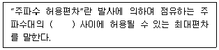
- 기준주파수와 지정주파수
- 특성주파수와 중심주파수
- 중심주파수와 지정주파수
- 중심주파수와 기준주파수
(정답률: 59%)
66. 유선방송국설비는 매월 방송신호를 측정ㆍ시험하여 그 결과를 기록ㆍ관리하여야 하는데 그 대상이 아닌 것은?
- 반송파의 주파수편차
- 전원험 변조도
- 점유주파수대역폭
- 반송파 신호레벨
(정답률: 60%)
67. 다음은 전파법에서 정의하는 용어 중 무엇을 뜻하는가?
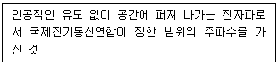
- 전파
- 주파수 분배
- 주파수 지정
- 무선
(정답률: 70%)
68. 설치장소 여건에 따른 가공통신선의 높이가 잘못된 것은?
- 도로상에 성치하는 경우 : 노면으로부터 4.5[m] 이상
- 철도를 횡단하는 경우 : 철도로부터 5.5[m] 이상
- 7,000[V] 초과 전압의 가공강전류전송용 전주에 가설하는 경우 : 노면으로부터 5[m] 이상
- 궤도를 횡단하는 경우 : 궤조면으로부터 6.5[m] 이상
(정답률: 59%)
69. 중계유선방송사업자가 천재ㆍ지변 기타 불가피한 사유로 대통령령이 정하는 기한까지 유선방송국설비를 설치 할 수 없을 때에는 어느 기관에게 설비설치기한의 연기를 요청해야 하는가?
- 고용노동부
- 방송통신위원회
- 문화체육관광부
- 국토해양부
(정답률: 84%)
70. 운영체제의 목적은 사용자 측면과 시스템 측면의 목적이 있다. 시스템 측면의 운영체제의 목적에 해당되지 않는 것은?
- 처리능력 증대
- 사용가능도 축소
- 응답시간 단축
- 신뢰성 향상
(정답률: 79%)
71. 패킷이 목적지까지 가는 경로를 보여주며 패킷 경로 및 네트워크 상태를 알 수 있는 진단 명령어는?
- ping
- arp
- tracert
- ipconfig
(정답률: 82%)
72. 다음 중 마이크로프로세서의 연산단위가 아닌것은?
- 8bit
- 16bit
- 24bit
- 32bit
(정답률: 77%)
73. 정보통신공사업법령에 의한 공사의 종류 중 방송국설비공사가 아닌 것은?
- 송출설비공사
- 영상ㆍ음향설비공사
- 방송관리시스템설비공사
- 수신설비공사
(정답률: 60%)
74. 병렬 컴퓨터에서 컴퓨터의 속도를 향상시키기 위한 기술 중에 Super-Scalar을 설명한 것은?
- 한 명령어를 실행하는 과정을 여러 단계로 나누어 실행하는 기술
- 파이프 라이닝을 여러 개 두고 병행 실행하는 기술
- 명령을 그룹화하여 한번에 여러 개 명령을 동시에 처리하는 기술
- 동시수행가능 명령어를 컴파일 수준에서 하나로 압축하는 기술
(정답률: 65%)
75. 운영체제의 기능 중 메모리 관리 기법에서 서로 떨어져 있는 여러 개의 사용하지 않는 공간을 모아서 하나의 큰 공간으로 만드는 작업을 무엇이라고 하는가?
- swapping
- compaction
- coalescing
- paging
(정답률: 70%)
76. 선형 자료구조인 스택(stack)에 자료를 삽입할 때 포인터의 변화는 어느 때 하는가?
- 자료 삽입 후 포인터 증가
- 자료 삽입 후 포인터 감소
- 포인터 감소 후 자료 삽입
- 포인터 증가 후 자료 삽입
(정답률: 71%)
77. 인터럽트 우선순위 방식이 아닌 것은?
- Subroutine Call
- Polling
- Priority Encoder
- Daisy Chain
(정답률: 54%)
78. Unix에 대한 설명 중 틀린 것은?
- 상당 부분 C 언어를 사용하여 작성되었으며 이식성이 우수하다.
- 쉘은 프로세서 관리, 기억장치 관리, 입출력 관리 등의 기능을 수행한다.
- 사용자는 하나 이상의 작업을 백그라운드에서 수행할 수 있어 여러 개의 작업을 병행 처리 할수 있다.
- 두 사람 이상의 사용자가 동시에 시스템을 사용할 수 있어 정보와 유틸리티들을 공유하는 편리한 작업 환경을 제공한다.
(정답률: 67%)
79. 다음의 곱셈 10.01×10.1을 행하면?
- 101.101
- 100.100
- 100.101
- 101.100
(정답률: 93%)
80. 하드웨어와 응용소프트웨어 사이에서 응용소프트웨어가 하드웨어에서 쉽게 사용할 수 있게 도와주는 역할을 하고, 컴퓨터 전반적으로 관리 및 운영하는 소프트웨어는 무엇이라고 하는가?
- 운영체제
- 디바이스 드라이버
- BIOS
- 네트워크 SW
(정답률: 84%)